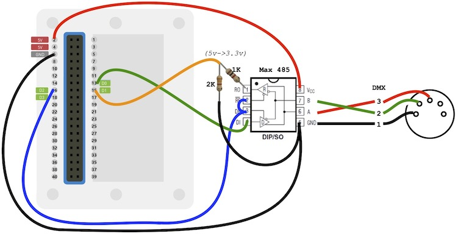

DMX Driver for AVR SAMD51 microcontrollers (Seeed Wio Terminal)
LXSAMD51DMX is a driver for sending or receiving DMX using one of the SAMD51’s SERCOM serial periperhial interfaces
LXSAMD51DMX output mode continuously sends DMX once its interrupts have been enabled using startOutput(). Use setSlot() to set the level value for a particular DMX dimmer/address/channel.
LXSAMD51DMX input mode continuously receives DMX once its interrupts have been enabled using startInput() Use getSlot() to read the level value for a particular DMX dimmer/address/channel.
LXSAMD51DMX is used with a single instance called SAMD51DMX
This is the DMX circuit for using LXSAMD51DMX with Seeed Wio Terminal:
